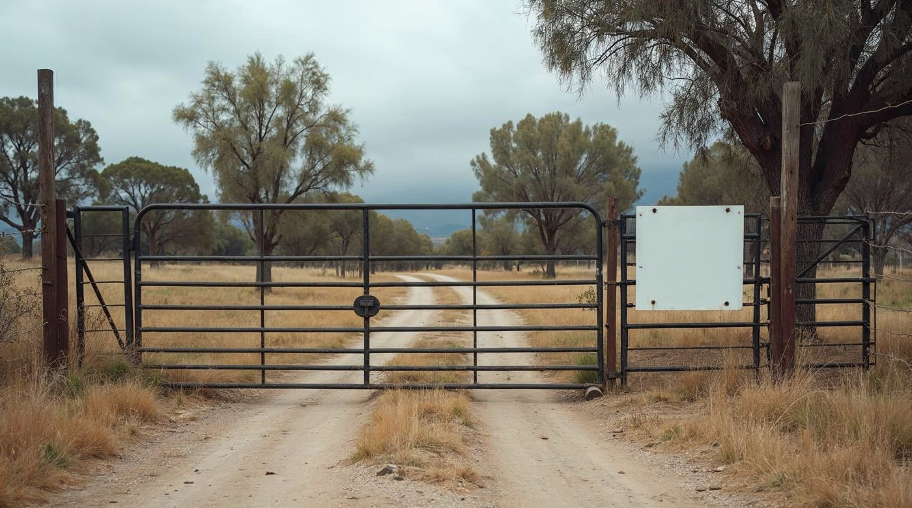

Señalética de campo y vehículos
Dónde vive de verdad la marca
Landera no se ve en un stand de eventos: se ve en un portón de predio, en un letrero de acceso y en la puerta de una camioneta. Es su aplicación más frecuente y la que más se improvisa.
Las tres reglas
1 · A distancia manda el isotipo. Sobre 15 m la bajada no se lee: se va el logotipo completo, queda la marca.
2 · Fondo propio, no fondo prestado. En terreno el soporte se pinta crema o tinta; el logotipo nunca va directo sobre metal ni madera cruda.
3 · En vehículo va la versión horizontal, centrada en el paño liso de la puerta y ocupando 2/3 de su ancho.
La franja de remate entra sólo si el soporte supera el metro de ancho.
En terreno

Portón de predio

Vehículo — 2/3 del paño de la puerta

Letrero de acceso
A distancia — qué sobrevive
Logotipo completo · sin bajada · sólo isotipo
⚠ Soportes de referencia generados — reemplazar por fotografía real de los predios
22 · Aplicaciones
Landera · Manual de marca